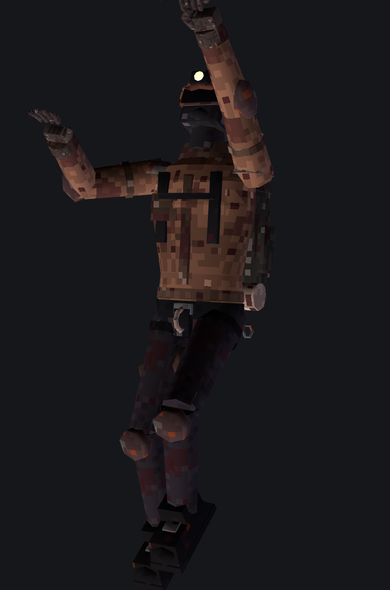

Belay puts up to 8 climbers in the same tower, roped together. One death goo, shared doors, revives at the terminals. Leave your team behind and you'll regret it.

Host a public, friends-only or private Steam lobby. Friends join through Steam invites, no port forwarding.
The lobby shares one world seed, so everyone climbs the exact same level layout.
Optional rope between climbers. Hold V on a wall to haul up the teammate below you.
The mass rises for everyone and chases whoever is lowest. Nobody gets to hang back.
When the first climber passes a door, a countdown starts. Then it shuts for the whole team.
Dead players spectate. A teammate can bring them back at a save terminal, or for free with a disk.
Roaches are never shared. What you pick up is yours, and you pay for your own revives.
Shortcuts need a vote at the shortcut terminal, so nobody splits the team on their own.
New versions download when the game starts and apply after a restart. The F7 menu also manages your other mods.
Close White Knuckle and download the installer zip with the button above.
Extract the whole zip anywhere (right-click, Extract All). Running it from inside the zip won't work.
Double-click "Install Belay.bat". It finds your game through Steam and installs BepInEx (the mod loader) and Belay. If Windows says "Windows protected your PC", click More info, then Run anyway.
Start the game and click "Belay (F7)" in the bottom right of the main menu. Host a lobby or join a friend's. Everyone needs the same Belay version.
Already run BepInEx 5? Grab the mod-only zip and drop BepInEx\plugins\Belay\Belay.dll into your game folder. To remove Belay, run "Uninstall Belay.bat". It leaves BepInEx and your other mods alone.
Loading releases... If this doesn't load, see all releases.
Belay is free and always will be. If you're having fun with it, you can chip in to help us keep building it. Every bit goes into more time on the mod.
Supporting is completely optional.
Yes. Belay is a mod for the Steam version of the game. It doesn't include or unlock the game.
The warning appears for any new download that isn't code-signed. The installer is a plain script you can open in Notepad. It only touches your White Knuckle folder.
Solo play is unchanged. In a co-op lobby, runs use the host's progression and disk saves are switched off so the team can't desync.
Switch it off in the Belay menu (F7, Mods tab) and restart the game. Two multiplayer mods at once will fight each other.
Open an issue on GitHub and attach BepInEx\LogOutput.log from your game folder.